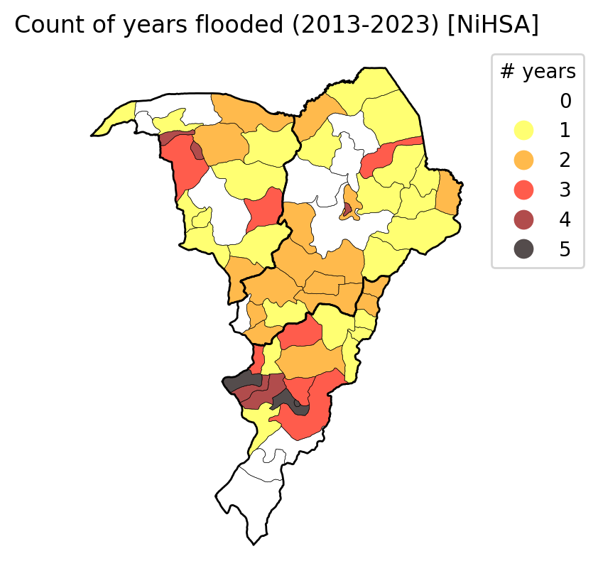
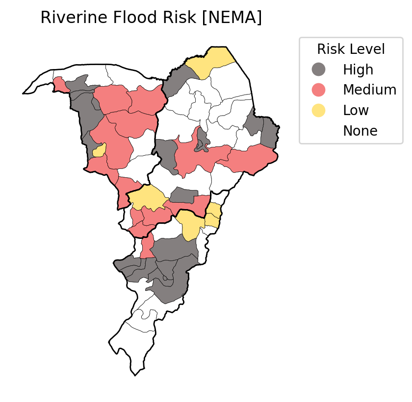
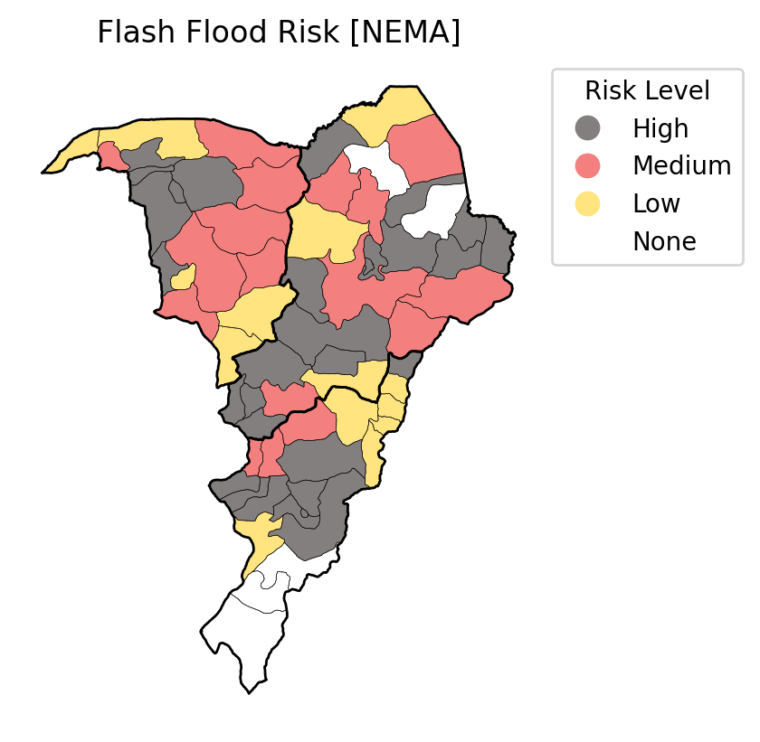
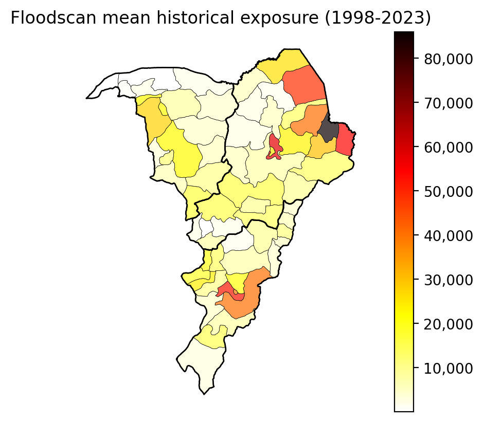
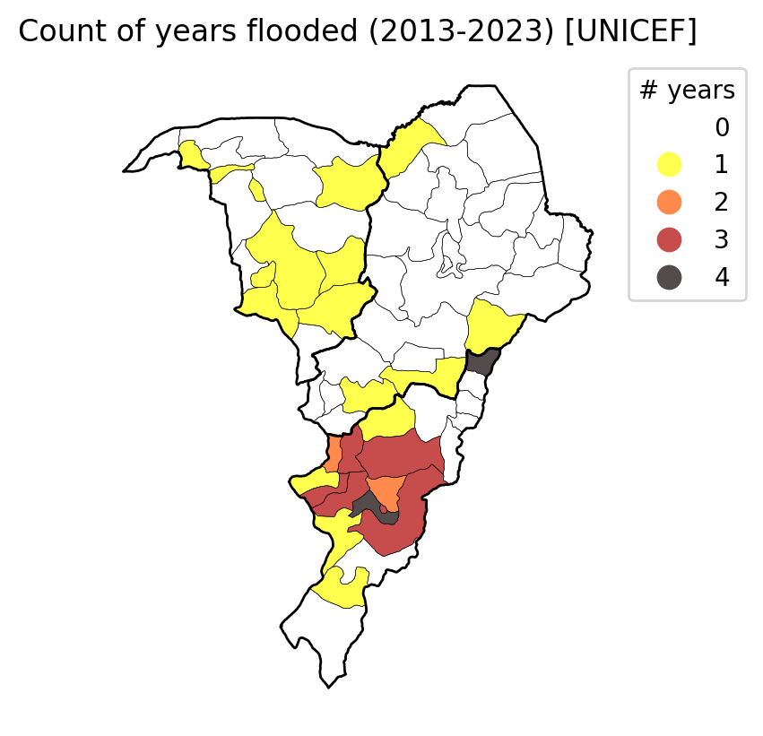
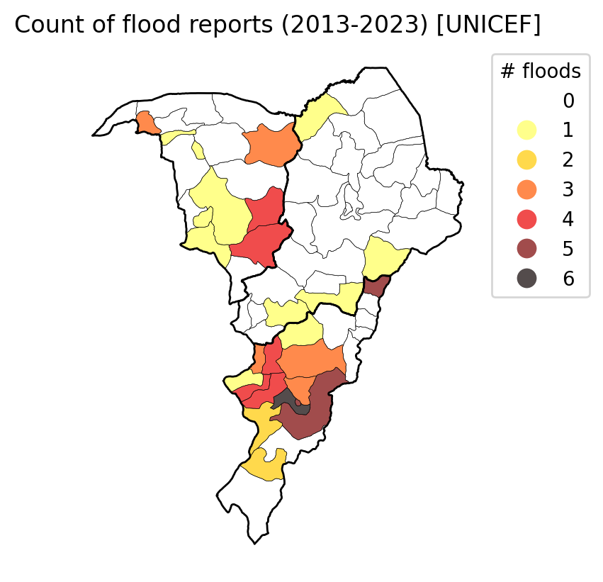
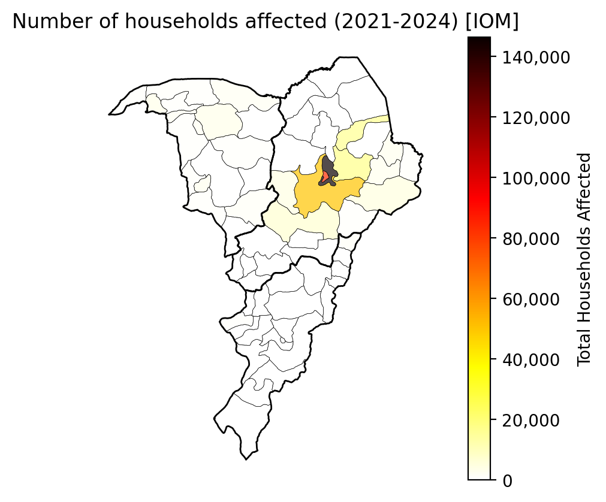
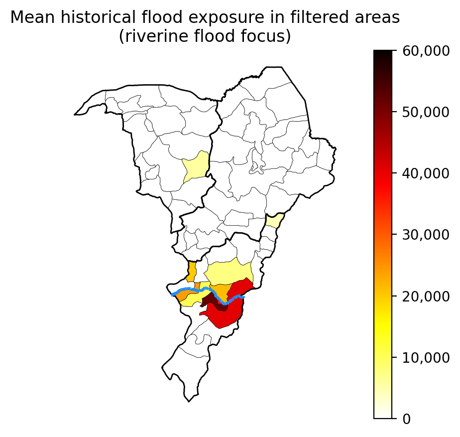
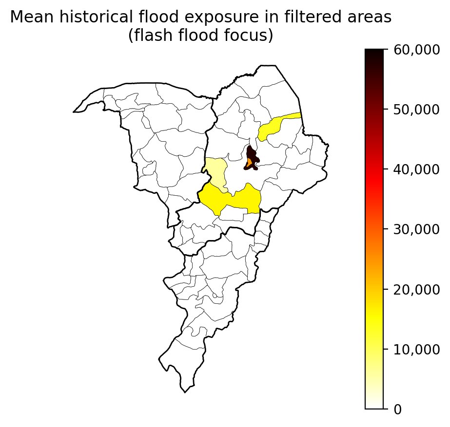

Code
%load_ext jupyter_black
%load_ext autoreload
%autoreload 2Comparison of historical impact from various sources, each of which have their own notebook for basic processing:
Also includes Floodscan exposure.
%load_ext jupyter_black
%load_ext autoreload
%autoreload 2import matplotlib.pyplot as plt
import matplotlib.ticker as mticker
from src.datasources import codab, floodscan, hydrosheds
from src.utils import blob
from src.constants import *adm1 = codab.load_codab_from_blob(admin_level=1, aoi_only=True)adm2 = codab.load_codab_from_blob(admin_level=2, aoi_only=True)import src.constants
blob_name = f"{src.constants.PROJECT_PREFIX}/processed/nihsa/floodhistory_2013_2023.parquet"
df_nihsa_record = blob.load_parquet_from_blob(blob_name)df_nihsa_record_sum = (
df_nihsa_record.groupby("ADM2_PCODE")["Flooded"].sum().reset_index()
)fig, ax = plt.subplots(dpi=200)
col = "Flooded"
gdf_plot = adm2.merge(df_nihsa_record_sum)
gdf_plot = gdf_plot[gdf_plot[col] >= 1]
gdf_plot[col] = (
gdf_plot[col]
.astype("category")
.cat.add_categories([0])
.cat.reorder_categories(range(6))
)
gdf_plot.plot(
column=col,
legend=True,
ax=ax,
cmap="hot_r",
alpha=0.7,
legend_kwds={
"bbox_to_anchor": (1, 1),
"loc": "upper left",
"title": "# years",
},
)
adm2.boundary.plot(ax=ax, linewidth=0.2, color="k")
adm1.boundary.plot(ax=ax, linewidth=1, color="k")
ax.axis("off")
ax.set_title("Count of years flooded (2013-2023) [NiHSA]")Text(0.5, 1.0, 'Count of years flooded (2013-2023) [NiHSA]')
df_nihsa_record_sum.merge(
adm2[["ADM2_PCODE", "ADM2_EN", "ADM1_EN"]]
).sort_values(["Flooded", "ADM1_EN", "ADM2_EN"], ascending=False).iloc[
:20
].drop(
columns="ADM2_PCODE"
).rename(
columns={"ADM2_EN": "LGA", "ADM1_EN": "State", "Flooded": "# years"}
)[
["State", "LGA", "# years"]
]| State | LGA | # years | |
|---|---|---|---|
| 20 | Adamawa | Yola South | 5 |
| 19 | Adamawa | Yola North | 5 |
| 8 | Adamawa | Lamurde | 5 |
| 48 | Yobe | Bade | 4 |
| 41 | Borno | Maiduguri | 4 |
| 15 | Adamawa | Numan | 4 |
| 0 | Adamawa | Demsa | 4 |
| 56 | Yobe | Jakusko | 3 |
| 50 | Yobe | Damaturu | 3 |
| 44 | Borno | Monguno | 3 |
| 5 | Adamawa | Guyuk | 3 |
| 3 | Adamawa | Gombi | 3 |
| 4 | Adamawa | Girei | 3 |
| 1 | Adamawa | Fufore | 3 |
| 63 | Yobe | Yunusari | 2 |
| 55 | Yobe | Gulani | 2 |
| 49 | Yobe | Bursari | 2 |
| 47 | Borno | Shani | 2 |
| 43 | Borno | Mobbar | 2 |
| 38 | Borno | Kwaya Kusar | 2 |
import src.constants
blob_name = f"{src.constants.PROJECT_PREFIX}/raw/AA-nigeria_data/NEMA/Flood Risk Excel Data 2.xlsx"
df_nema_risk = blob.load_excel_from_blob(blob_name)df_nema_risk| ADM2_EN | ADM2_PCODE | ADM1_EN | ADM1_PCODE | STATE | ADM2_PCODE2 | Riverine Flood Risk | Flash Flood Risk | Coastal Flood Risk | Comments | Column3 | |
|---|---|---|---|---|---|---|---|---|---|---|---|
| 0 | Aba North | NG001001 | Abia | NG001 | Abia | NG001001 | NaN | High | NaN | <Null> | NaN |
| 1 | Aba South | NG001002 | Abia | NG001 | Abia | NG001002 | NaN | High | NaN | <Null> | NaN |
| 2 | Abadam | NG008001 | Borno | NG008 | Borno | NG008001 | Low | Low | NaN | <Null> | NaN |
| 3 | Abaji | NG015001 | Federal Capital Territory | NG015 | Federal Capital Territory | NG015001 | High | NaN | NaN | Nearness to River Niger | NaN |
| 4 | Abak | NG003001 | Akwa Ibom | NG003 | Akwa Ibom | NG003001 | NaN | Low | NaN | <Null> | NaN |
| ... | ... | ... | ... | ... | ... | ... | ... | ... | ... | ... | ... |
| 769 | Zango-Kataf | NG019022 | Kaduna | NG019 | Kaduna | NG019022 | NaN | NaN | NaN | <Null> | NaN |
| 770 | Zaria | NG019023 | Kaduna | NG019 | Kaduna | NG019023 | NaN | Medium | NaN | MUGUME, GYALLESU, WUCHICHRI | NaN |
| 771 | Zing | NG035016 | Taraba | NG035 | Taraba | NG035016 | Low | NaN | NaN | <Null> | NaN |
| 772 | Zurmi | NG037014 | Zamfara | NG037 | Zamfara | NG037014 | Medium | NaN | NaN | Dole Moriki, Kwangwami, | NaN |
| 773 | Zuru | NG022021 | Kebbi | NG022 | Kebbi | NG022021 | Low | Low | NaN | Zuru town, Rafin Mosai, (Girmace), OverfLow of... | NaN |
774 rows × 11 columns
df_nema_risk["riv_num"] = df_nema_risk["Riverine Flood Risk"].replace(
{"Very High": 4, "High": 3, "Medium": 2, "Low": 1}
)
df_nema_risk["flash_num"] = df_nema_risk["Flash Flood Risk"].replace(
{"Very High": 4, "High": 3, "Medium": 2, "Low": 1}
)/var/folders/66/764yc5p92nvdc_nm3xmy5rn40000gn/T/ipykernel_27535/1711243050.py:1: FutureWarning: Downcasting behavior in `replace` is deprecated and will be removed in a future version. To retain the old behavior, explicitly call `result.infer_objects(copy=False)`. To opt-in to the future behavior, set `pd.set_option('future.no_silent_downcasting', True)`
df_nema_risk["riv_num"] = df_nema_risk["Riverine Flood Risk"].replace(
/var/folders/66/764yc5p92nvdc_nm3xmy5rn40000gn/T/ipykernel_27535/1711243050.py:4: FutureWarning: Downcasting behavior in `replace` is deprecated and will be removed in a future version. To retain the old behavior, explicitly call `result.infer_objects(copy=False)`. To opt-in to the future behavior, set `pd.set_option('future.no_silent_downcasting', True)`
df_nema_risk["flash_num"] = df_nema_risk["Flash Flood Risk"].replace(fig, ax = plt.subplots(dpi=200)
col = "Riverine Flood Risk"
gdf_plot = adm2.merge(df_nema_risk)
gdf_plot[col] = (
gdf_plot[col]
.astype("category")
.cat.reorder_categories(["High", "Medium", "Low"])
.cat.add_categories(["None"])
)
gdf_plot.plot(
column=col,
legend=True,
ax=ax,
cmap="hot",
alpha=0.5,
legend_kwds={
"bbox_to_anchor": (1, 1),
"loc": "upper left",
"title": "Risk Level",
},
)
adm2.boundary.plot(ax=ax, linewidth=0.2, color="k")
adm1.boundary.plot(ax=ax, linewidth=1, color="k")
ax.axis("off")
ax.set_title(f"{col} [NEMA]")Text(0.5, 1.0, 'Riverine Flood Risk [NEMA]')
fig, ax = plt.subplots(dpi=200)
col = "Flash Flood Risk"
gdf_plot = adm2.merge(df_nema_risk)
gdf_plot[col] = (
gdf_plot[col]
.astype("category")
.cat.reorder_categories(["High", "Medium", "Low"])
.cat.add_categories(["None"])
)
gdf_plot.plot(
column=col,
legend=True,
ax=ax,
alpha=0.5,
cmap="hot",
legend_kwds={
"bbox_to_anchor": (1, 1),
"loc": "upper left",
"title": "Risk Level",
},
)
adm2.boundary.plot(ax=ax, linewidth=0.2, color="k")
adm1.boundary.plot(ax=ax, linewidth=1, color="k")
ax.axis("off")
ax.set_title(f"{col} [NEMA]")Text(0.5, 1.0, 'Flash Flood Risk [NEMA]')
df_nema_risk["riv_num"].unique()array([nan, 1., 3., 2., 4.])df_nema_risk["flash_num"].unique()array([ 3., 1., nan, 2., 4.])df_nema_risk[
(
df_nema_risk["riv_num"].astype(float)
+ df_nema_risk["flash_num"].astype(float)
== 6
)
& (df_nema_risk["ADM1_PCODE"].isin(AOI_ADM1_PCODES))
][["STATE", "ADM2_EN"]].sort_values(["STATE", "ADM2_EN"]).rename(
columns={"ADM2_EN": "LGA"}
)| STATE | LGA | |
|---|---|---|
| 158 | Adamawa | Demsa |
| 222 | Adamawa | Fufore |
| 243 | Adamawa | Girei |
| 462 | Adamawa | Lamurde |
| 541 | Adamawa | Numan |
| 686 | Adamawa | Song |
| 762 | Adamawa | Yola North |
| 763 | Adamawa | Yola South |
| 139 | Borno | Chibok |
| 387 | Borno | Jere |
| 399 | Borno | Kaga |
| 405 | Borno | Kala/Balge |
| 478 | Borno | Maiduguri |
| 506 | Borno | Mobbar |
| 524 | Borno | Ngala |
| 82 | Yobe | Bade |
| 382 | Yobe | Jakusko |
| 413 | Yobe | Karasuwa |
| 517 | Yobe | Nangere |
fs = floodscan.load_adm2_flood_exposures()
fs_mean = fs.groupby("ADM2_PCODE")["total_exposed"].mean().reset_index()fig, ax = plt.subplots(dpi=200)
adm2.merge(fs_mean).plot(
column="total_exposed", legend=True, ax=ax, alpha=0.7, cmap="hot_r"
)
cbar = ax.get_figure().axes[-1] # Get last axis (colorbar)
cbar.yaxis.set_major_formatter(mticker.FuncFormatter(lambda x, _: f"{x:,.0f}"))
adm2.boundary.plot(ax=ax, linewidth=0.2, color="k")
adm1.boundary.plot(ax=ax, linewidth=1, color="k")
ax.axis("off")
ax.set_title("Floodscan mean historical exposure (1998-2023)")Text(0.5, 1.0, 'Floodscan mean historical exposure (1998-2023)')
fs_mean.merge(adm2[["ADM2_PCODE", "ADM2_EN", "ADM1_EN"]]).rename(
columns={
"ADM2_EN": "LGA",
"ADM1_EN": "State",
"total_exposed": "Total Exposed",
}
)[["State", "LGA", "Total Exposed"]].sort_values(
"Total Exposed", ascending=False
).astype(
int, errors="ignore"
).iloc[
:20
].style.background_gradient(
subset=["Total Exposed"], cmap="hot_r", vmin=0
).format(
{"Total Exposed": "{:,}"}
)| State | LGA | Total Exposed | |
|---|---|---|---|
| 45 | Borno | Ngala | 85,934 |
| 33 | Borno | Jere | 57,577 |
| 35 | Borno | Kala/Balge | 53,787 |
| 20 | Adamawa | Yola South | 51,940 |
| 37 | Borno | Kukawa | 48,488 |
| 1 | Adamawa | Fufore | 40,547 |
| 42 | Borno | Marte | 40,393 |
| 19 | Adamawa | Yola North | 38,587 |
| 28 | Borno | Dikwa | 29,676 |
| 56 | Yobe | Jakusko | 27,343 |
| 21 | Borno | Abadam | 25,752 |
| 41 | Borno | Maiduguri | 24,525 |
| 15 | Adamawa | Numan | 23,965 |
| 39 | Borno | Mafa | 23,219 |
| 52 | Yobe | Fune | 22,317 |
| 48 | Yobe | Bade | 22,126 |
| 4 | Adamawa | Girei | 21,222 |
| 5 | Adamawa | Guyuk | 20,071 |
| 8 | Adamawa | Lamurde | 18,662 |
| 55 | Yobe | Gulani | 16,610 |
import src.constants
blob_name = f"{src.constants.PROJECT_PREFIX}/processed/nema/NEMA Copy of FLOOD DISASTER _DATA processed.csv"
df_unicef = blob.load_csv_from_blob(blob_name)
df_unicef = (
df_unicef.melt(id_vars=[x for x in df_unicef.columns if "ADM" in x])
.drop(columns="variable")
.rename(columns={"value": "year"})
)
df_unicef = df_unicef.dropna()
df_unicef["year"] = df_unicef["year"].astype(int)df_unicef_count = (
df_unicef.groupby("ADM2_PCODE")
.size()
.reset_index()
.rename(columns={0: "count_floods"})
)df_unicef_unique_count = (
df_unicef.groupby("ADM2_PCODE")["year"]
.nunique()
.reset_index()
.rename(columns={"year": "count_years"})
)df_unicef_count = df_unicef_count.merge(df_unicef_unique_count)df_unicef_count| ADM2_PCODE | count_floods | count_years | |
|---|---|---|---|
| 0 | NG002001 | 4 | 3 |
| 1 | NG002002 | 5 | 3 |
| 2 | NG002003 | 2 | 1 |
| 3 | NG002004 | 1 | 1 |
| 4 | NG002005 | 3 | 2 |
| 5 | NG002006 | 3 | 2 |
| 6 | NG002009 | 1 | 1 |
| 7 | NG002010 | 5 | 4 |
| 8 | NG002012 | 2 | 1 |
| 9 | NG002016 | 4 | 3 |
| 10 | NG002017 | 4 | 3 |
| 11 | NG002018 | 3 | 3 |
| 12 | NG002020 | 5 | 3 |
| 13 | NG002021 | 6 | 4 |
| 14 | NG008002 | 1 | 1 |
| 15 | NG008011 | 1 | 1 |
| 16 | NG008012 | 1 | 1 |
| 17 | NG008023 | 1 | 1 |
| 18 | NG036001 | 1 | 1 |
| 19 | NG036003 | 4 | 1 |
| 20 | NG036004 | 1 | 1 |
| 21 | NG036005 | 1 | 1 |
| 22 | NG036006 | 3 | 1 |
| 23 | NG036007 | 4 | 1 |
| 24 | NG036013 | 3 | 1 |
| 25 | NG036014 | 1 | 1 |
fig, ax = plt.subplots(dpi=200)
col = "count_years"
gdf_plot = adm2.merge(df_unicef_count)
gdf_plot[col] = (
gdf_plot[col]
.astype("category")
.cat.add_categories([0])
.cat.reorder_categories(range(5))
)
gdf_plot.plot(
column=col,
legend=True,
ax=ax,
cmap="hot_r",
alpha=0.7,
legend_kwds={
"bbox_to_anchor": (1, 1),
"loc": "upper left",
"title": "# years",
},
)
adm2.boundary.plot(ax=ax, linewidth=0.2, color="k")
adm1.boundary.plot(ax=ax, linewidth=1, color="k")
ax.axis("off")
ax.set_title("Count of years flooded (2013-2023) [UNICEF]")Text(0.5, 1.0, 'Count of years flooded (2013-2023) [UNICEF]')
fig, ax = plt.subplots(dpi=200)
col = "count_floods"
gdf_plot = adm2.merge(df_unicef_count)
gdf_plot[col] = (
gdf_plot[col]
.astype("category")
.cat.add_categories([0])
.cat.reorder_categories(range(7))
)
gdf_plot.plot(
column=col,
legend=True,
ax=ax,
cmap="hot_r",
alpha=0.7,
legend_kwds={
"bbox_to_anchor": (1, 1),
"loc": "upper left",
"title": "# floods",
},
)
adm2.boundary.plot(ax=ax, linewidth=0.2, color="k")
adm1.boundary.plot(ax=ax, linewidth=1, color="k")
ax.axis("off")
ax.set_title("Count of flood reports (2013-2023) [UNICEF]")Text(0.5, 1.0, 'Count of flood reports (2013-2023) [UNICEF]')
df_unicef_count[df_unicef_count["count_floods"] >= 4].merge(
adm2[["ADM2_PCODE", "ADM2_EN", "ADM1_EN"]]
).sort_values(["ADM1_EN", "ADM2_EN"]).sort_values(
"count_floods", ascending=False
).rename(
columns={"ADM2_EN": "LGA", "ADM1_EN": "State"}
)[
["State", "LGA", "count_floods"]
]| State | LGA | count_floods | |
|---|---|---|---|
| 6 | Adamawa | Yola South | 6 |
| 1 | Adamawa | Fufore | 5 |
| 2 | Adamawa | Madagali | 5 |
| 5 | Adamawa | Yola North | 5 |
| 0 | Adamawa | Demsa | 4 |
| 3 | Adamawa | Numan | 4 |
| 4 | Adamawa | Shelleng | 4 |
| 7 | Yobe | Damaturu | 4 |
| 8 | Yobe | Gujba | 4 |
import src.constants
blob_name = f"{src.constants.PROJECT_PREFIX}/processed/iom/rainseason_2021_2024.parquet"
df_iom = blob.load_parquet_from_blob(blob_name)df_iom_sum = df_iom.groupby("ADM2_PCODE")["#HH Affected"].sum().reset_index()fig, ax = plt.subplots(dpi=200)
col = "#HH Affected"
gdf_plot = adm2.merge(df_iom_sum)
gdf_plot.plot(
column=col,
legend=True,
ax=ax,
alpha=0.7,
cmap="hot_r",
legend_kwds={"label": "Total Households Affected"},
)
cbar = ax.get_figure().axes[-1] # Get last axis (colorbar)
cbar.yaxis.set_major_formatter(mticker.FuncFormatter(lambda x, _: f"{x:,.0f}"))
adm2.boundary.plot(ax=ax, linewidth=0.2, color="k")
adm1.boundary.plot(ax=ax, linewidth=1, color="k")
ax.axis("off")
ax.set_title("Number of households affected (2021-2024) [IOM]")Text(0.5, 1.0, 'Number of households affected (2021-2024) [IOM]')
gdf_plot.sort_values(col, ascending=False)[["ADM1_EN", "ADM2_EN", col]]| ADM1_EN | ADM2_EN | #HH Affected | |
|---|---|---|---|
| 18 | Borno | Jere | 146400.0 |
| 28 | Borno | Maiduguri | 83229.0 |
| 22 | Borno | Konduga | 50224.0 |
| 26 | Borno | Mafa | 17257.0 |
| 30 | Borno | Monguno | 16107.0 |
| 6 | Borno | Damboa | 7298.0 |
| 1 | Borno | Bama | 5001.0 |
| 19 | Borno | Kaga | 4299.0 |
| 34 | Yobe | Nguru | 2891.0 |
| 3 | Yobe | Bursari | 2865.0 |
| 7 | Borno | Dikwa | 2764.0 |
| 36 | Yobe | Potiskum | 2545.0 |
| 32 | Borno | Ngala | 2431.0 |
| 39 | Yobe | Yunusari | 1973.0 |
| 0 | Yobe | Bade | 1720.0 |
| 25 | Adamawa | Madagali | 1711.0 |
| 14 | Yobe | Gujba | 1535.0 |
| 17 | Yobe | Jakusko | 1061.0 |
| 31 | Yobe | Nangere | 1055.0 |
| 37 | Yobe | Tarmua | 1048.0 |
| 24 | Yobe | Machina | 1045.0 |
| 21 | Yobe | Karasuwa | 1044.0 |
| 20 | Borno | Kala/Balge | 974.0 |
| 40 | Yobe | Yusufari | 966.0 |
| 8 | Yobe | Fika | 925.0 |
| 23 | Adamawa | Lamurde | 750.0 |
| 16 | Borno | Gwoza | 663.0 |
| 29 | Borno | Mobbar | 568.0 |
| 15 | Yobe | Gulani | 483.0 |
| 13 | Borno | Gubio | 479.0 |
| 5 | Yobe | Damaturu | 402.0 |
| 33 | Borno | Nganzai | 380.0 |
| 10 | Yobe | Fune | 314.0 |
| 35 | Adamawa | Numan | 206.0 |
| 27 | Borno | Magumeri | 150.0 |
| 12 | Adamawa | Girei | 104.0 |
| 11 | Yobe | Geidam | 90.0 |
| 9 | Adamawa | Fufore | 75.0 |
| 38 | Adamawa | Yola South | 29.0 |
| 4 | Borno | Chibok | 0.0 |
| 2 | Borno | Biu | 0.0 |
df_iom_sum["#HH Affected"].quantile(0.9)16107.0df_combined = (
adm2.merge(fs_mean, how="left")
.merge(df_unicef_count, how="left")
.merge(df_nema_risk, how="left")
.merge(df_nihsa_record_sum, how="left")
.merge(df_iom_sum, how="left")
)
df_combined| ADM2_EN | ADM2_PCODE | ADM1_EN | ADM1_PCODE | ADM0_EN | ADM0_PCODE | DATE | VALIDON | VALIDTO | geometry | ... | ADM2_PCODE2 | Riverine Flood Risk | Flash Flood Risk | Coastal Flood Risk | Comments | Column3 | riv_num | flash_num | Flooded | #HH Affected | |
|---|---|---|---|---|---|---|---|---|---|---|---|---|---|---|---|---|---|---|---|---|---|
| 0 | Abadam | NG008001 | Borno | NG008 | Nigeria | NG | 2017-03-31 | 2019-04-17 | NaT | POLYGON ((13.11029 13.10963, 13.10815 13.11404... | ... | NG008001 | Low | Low | NaN | <Null> | NaN | 1.0 | 1.0 | 1 | NaN |
| 1 | Askira/Uba | NG008002 | Borno | NG008 | Nigeria | NG | 2017-03-31 | 2019-04-17 | NaT | POLYGON ((13.09852 10.44508, 13.09352 10.44667... | ... | NG008002 | Medium | Low | NaN | <Null> | NaN | 2.0 | 1.0 | 2 | NaN |
| 2 | Bade | NG036001 | Yobe | NG036 | Nigeria | NG | 2017-03-31 | 2019-04-17 | NaT | MULTIPOLYGON (((11.18769 12.50815, 11.1836 12.... | ... | NG036001 | High | High | NaN | PREVALENCE OF RIVERINE FLOOD IS MORE | NaN | 3.0 | 3.0 | 4 | 1720.0 |
| 3 | Bama | NG008003 | Borno | NG008 | Nigeria | NG | 2017-03-31 | 2019-04-17 | NaT | POLYGON ((13.99056 11.31251, 13.97581 11.30513... | ... | NG008003 | Medium | Medium | NaN | <Null> | NaN | 2.0 | 2.0 | 1 | 5001.0 |
| 4 | Bayo | NG008004 | Borno | NG008 | Nigeria | NG | 2017-03-31 | 2019-04-17 | NaT | POLYGON ((11.65688 10.19681, 11.60128 10.20806... | ... | NG008004 | NaN | High | NaN | <Null> | NaN | NaN | 3.0 | 0 | NaN |
| ... | ... | ... | ... | ... | ... | ... | ... | ... | ... | ... | ... | ... | ... | ... | ... | ... | ... | ... | ... | ... | ... |
| 60 | Toungo | NG002019 | Adamawa | NG002 | Nigeria | NG | 2017-03-31 | 2019-04-17 | NaT | POLYGON ((12.21046 7.97042, 12.203 7.96432, 12... | ... | NG002019 | NaN | NaN | NaN | <Null> | NaN | NaN | NaN | 0 | NaN |
| 61 | Yola North | NG002020 | Adamawa | NG002 | Nigeria | NG | 2017-03-31 | 2019-04-17 | NaT | POLYGON ((12.40447 9.25767, 12.40226 9.26307, ... | ... | NG002020 | High | High | NaN | <Null> | NaN | 3.0 | 3.0 | 5 | NaN |
| 62 | Yola South | NG002021 | Adamawa | NG002 | Nigeria | NG | 2017-03-31 | 2019-04-17 | NaT | POLYGON ((12.43708 9.213, 12.43732 9.21285, 12... | ... | NG002021 | High | High | NaN | <Null> | NaN | 3.0 | 3.0 | 5 | 29.0 |
| 63 | Yunusari | NG036016 | Yobe | NG036 | Nigeria | NG | 2017-03-31 | 2019-04-17 | NaT | POLYGON ((12.13949 13.09935, 12.14254 13.09896... | ... | NG036016 | NaN | Medium | NaN | <Null> | NaN | NaN | 2.0 | 2 | 1973.0 |
| 64 | Yusufari | NG036017 | Yobe | NG036 | Nigeria | NG | 2017-03-31 | 2019-04-17 | NaT | POLYGON ((11.32417 13.15145, 11.32829 13.14117... | ... | NG036017 | NaN | Low | NaN | <Null> | NaN | NaN | 1.0 | 0 | 966.0 |
65 rows × 24 columns
benue = hydrosheds.load_benue_aoi()gdf_plot = df_combined[
(df_combined["count_floods"] >= 3)
& ((df_combined["riv_num"] >= 2) | (df_combined["flash_num"] >= 2))
& (df_combined["Flooded"] >= 2)
].copy()
fig, ax = plt.subplots(dpi=200)
col = "total_exposed"
gdf_plot.plot(column=col, legend=True, ax=ax, cmap="hot_r", vmin=0, vmax=60000)
cbar = ax.get_figure().axes[-1] # Get last axis (colorbar)
cbar.yaxis.set_major_formatter(mticker.FuncFormatter(lambda x, _: f"{x:,.0f}"))
adm2.boundary.plot(ax=ax, linewidth=0.2, color="k")
adm1.boundary.plot(ax=ax, linewidth=1, color="k")
benue.plot(ax=ax, color="dodgerblue", linewidth=2)
ax.axis("off")
ax.set_title(
"Mean historical flood exposure in filtered areas\n(riverine flood focus)"
)Text(0.5, 1.0, 'Mean historical flood exposure in filtered areas\n(riverine flood focus)')
gdf_plot["Total Exposed"] = gdf_plot["total_exposed"].astype(int)
gdf_plot.sort_values("Total Exposed", ascending=False)[
["ADM1_EN", "ADM2_EN", "Total Exposed"]
].rename(
columns={"ADM2_EN": "LGA", "ADM1_EN": "State"}
).style.background_gradient(
subset=["Total Exposed"], cmap="hot_r", vmin=0
).format(
{"Total Exposed": "{:,}"}
)| State | LGA | Total Exposed | |
|---|---|---|---|
| 62 | Adamawa | Yola South | 51,940 |
| 13 | Adamawa | Fufore | 40,547 |
| 61 | Adamawa | Yola North | 38,587 |
| 54 | Adamawa | Numan | 23,965 |
| 17 | Adamawa | Girei | 21,222 |
| 22 | Adamawa | Guyuk | 20,071 |
| 10 | Adamawa | Demsa | 10,107 |
| 58 | Adamawa | Song | 7,535 |
| 8 | Yobe | Damaturu | 5,683 |
| 38 | Adamawa | Madagali | 4,449 |
df_combined[
(df_combined["#HH Affected"] >= 5000)
& ((df_combined["riv_num"] >= 2) | (df_combined["flash_num"] >= 2))
# & (df_combined["Flooded"] >= 2)
]| ADM2_EN | ADM2_PCODE | ADM1_EN | ADM1_PCODE | ADM0_EN | ADM0_PCODE | DATE | VALIDON | VALIDTO | geometry | ... | ADM2_PCODE2 | Riverine Flood Risk | Flash Flood Risk | Coastal Flood Risk | Comments | Column3 | riv_num | flash_num | Flooded | #HH Affected | |
|---|---|---|---|---|---|---|---|---|---|---|---|---|---|---|---|---|---|---|---|---|---|
| 3 | Bama | NG008003 | Borno | NG008 | Nigeria | NG | 2017-03-31 | 2019-04-17 | NaT | POLYGON ((13.99056 11.31251, 13.97581 11.30513... | ... | NG008003 | Medium | Medium | NaN | <Null> | NaN | 2.0 | 2.0 | 1 | 5001.0 |
| 9 | Damboa | NG008007 | Borno | NG008 | Nigeria | NG | 2017-03-31 | 2019-04-17 | NaT | POLYGON ((12.90696 11.27313, 12.91443 11.27299... | ... | NG008007 | NaN | High | NaN | <Null> | NaN | NaN | 3.0 | 2 | 7298.0 |
| 29 | Jere | NG008013 | Borno | NG008 | Nigeria | NG | 2017-03-31 | 2019-04-17 | NaT | POLYGON ((13.11072 11.76419, 13.11178 11.76555... | ... | NG008013 | High | High | NaN | regular realease of water from Labdo Dam in ca... | NaN | 3.0 | 3.0 | 2 | 146400.0 |
| 33 | Konduga | NG008016 | Borno | NG008 | Nigeria | NG | 2017-03-31 | 2019-04-17 | NaT | POLYGON ((12.7054 11.29421, 12.70365 11.29971,... | ... | NG008016 | Medium | Medium | NaN | <Null> | NaN | 2.0 | 2.0 | 0 | 50224.0 |
| 39 | Mafa | NG008019 | Borno | NG008 | Nigeria | NG | 2017-03-31 | 2019-04-17 | NaT | POLYGON ((13.29473 11.76548, 13.29185 11.76604... | ... | NG008019 | NaN | High | NaN | <Null> | NaN | NaN | 3.0 | 1 | 17257.0 |
| 41 | Maiduguri | NG008021 | Borno | NG008 | Nigeria | NG | 2017-03-31 | 2019-04-17 | NaT | POLYGON ((13.06877 11.74765, 13.06564 11.75216... | ... | NG008021 | High | High | NaN | regular realease of water from Labdo Dam in ca... | NaN | 3.0 | 3.0 | 4 | 83229.0 |
| 47 | Monguno | NG008024 | Borno | NG008 | Nigeria | NG | 2017-03-31 | 2019-04-17 | NaT | POLYGON ((13.46501 12.2811, 13.46621 12.27732,... | ... | NG008024 | NaN | High | NaN | <Null> | NaN | NaN | 3.0 | 3 | 16107.0 |
7 rows × 24 columns
gdf_plot = df_combined[
(df_combined["#HH Affected"] >= df_combined["#HH Affected"].quantile(0.8))
& ((df_combined["riv_num"] >= 2) | (df_combined["flash_num"] >= 2))
& (df_combined["Flooded"] >= 2)
].copy()
fig, ax = plt.subplots(dpi=200)
col = "total_exposed"
gdf_plot.plot(column=col, legend=True, ax=ax, cmap="hot_r", vmin=0, vmax=60000)
cbar = ax.get_figure().axes[-1] # Get last axis (colorbar)
cbar.yaxis.set_major_formatter(mticker.FuncFormatter(lambda x, _: f"{x:,.0f}"))
adm2.boundary.plot(ax=ax, linewidth=0.2, color="k")
adm1.boundary.plot(ax=ax, linewidth=1, color="k")
ax.axis("off")
ax.set_title(
"Mean historical flood exposure in filtered areas\n(flash flood focus)"
)Text(0.5, 1.0, 'Mean historical flood exposure in filtered areas\n(flash flood focus)')
gdf_plot["Total Exposed"] = gdf_plot["total_exposed"].astype(int)
gdf_plot.sort_values("Total Exposed", ascending=False)[
["ADM1_EN", "ADM2_EN", "Total Exposed"]
].rename(
columns={"ADM2_EN": "LGA", "ADM1_EN": "State"}
).style.background_gradient(
subset=["Total Exposed"], cmap="hot_r", vmin=0
).format(
{"Total Exposed": "{:,}"}
)| State | LGA | Total Exposed | |
|---|---|---|---|
| 29 | Borno | Jere | 57,577 |
| 41 | Borno | Maiduguri | 24,525 |
| 9 | Borno | Damboa | 15,960 |
| 47 | Borno | Monguno | 13,565 |
| 30 | Borno | Kaga | 5,875 |